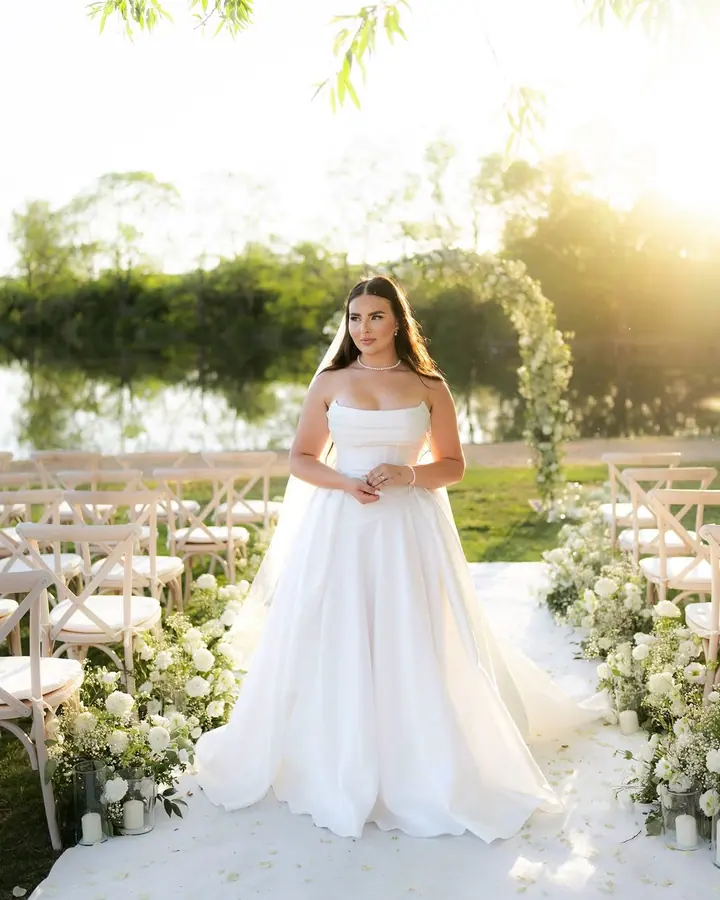
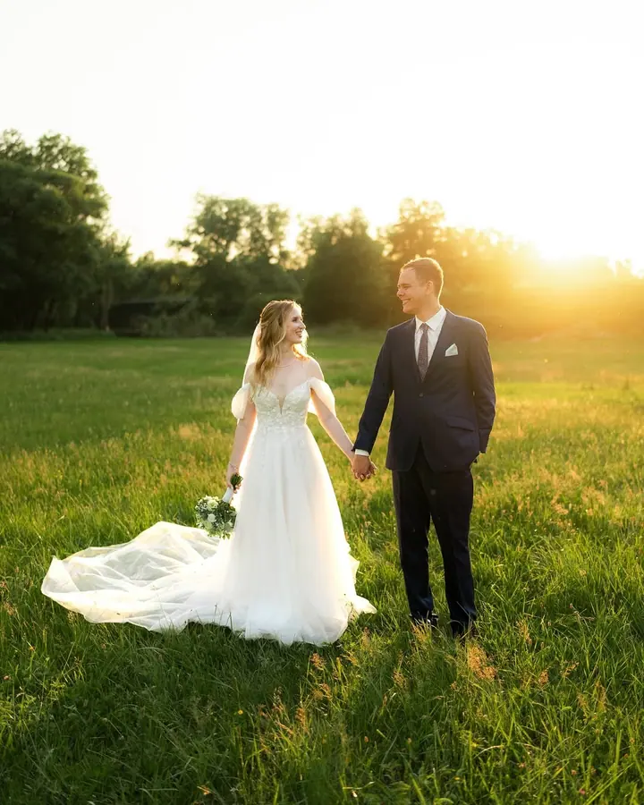
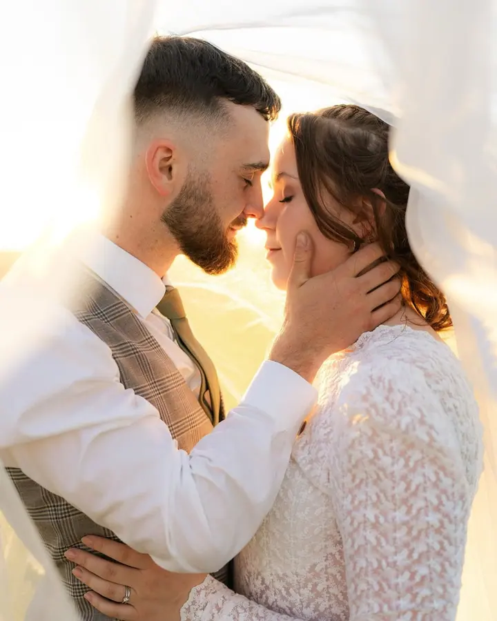
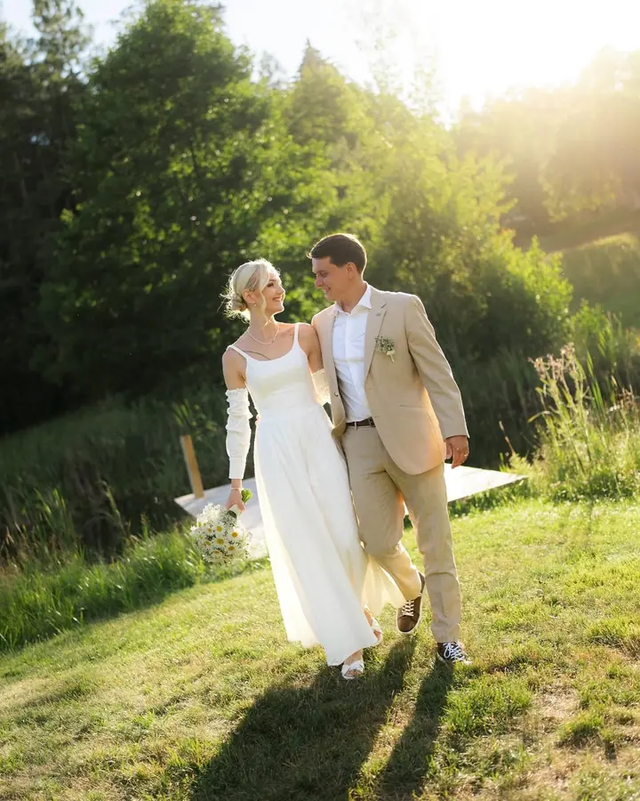

jedna
Svatební focení
Fotím váš den buď od obřadu po první tanec, nebo celý den od ranních příprav až po prskavkový tanec a zábavu. Na přání s kameramanem Lukášem svatbu i natočíme.

Svatební a párová fotografka · Pelhřimov, Vysočina, Středočeský kraj

Jmenuji se Darina Procházková a jsem svatební a párová fotografka z Pelhřimova. Fotím svatby, páry a portréty na Vysočině, ve Středočeském kraji i dál. Věřím, že nejkrásnější momenty vznikají přirozeně, a proto se u mě nikdo nemusí bát nervozity.
Více o mně
Co fotím
jedna
Fotím váš den buď od obřadu po první tanec, nebo celý den od ranních příprav až po prskavkový tanec a zábavu. Na přání s kameramanem Lukášem svatbu i natočíme.
dvě
Fotím uvolněně a v klidu, aby vás focení bavilo stejně jako výsledné fotky. Se vším poradím a provedu vás celým focením.
Portrétní focení není časově omezené. Dostanete upravené barevné i černobílé fotografie a předem vám poradím, co si vzít na sebe.
Fotím ve svém ateliéru v Pelhřimově. Jak se připravit a co si vzít s sebou, vám povím předem.
Nejkrásnější momenty vznikají přirozeně

Za objektivem
Jsem především svatební a párová fotografka. S focením jsem začínala ve Voticích, kde jsem žila skoro celý život, a dnes fotím z Pelhřimova na Vysočině. Kromě svateb a párů si ráda odskočím i k dalším projektům, jako jsou ateliérové, brandové nebo produktové fotografie.
Mám cit pro detail, ale nejvíc mě baví chvíle, které vzniknou samy. Na focení vám často říkám, že naprosto chápu, když jste nervózní. Není to totéž jako selfíčko, kde přesně víte, jak se tváříte. Nenechám vás ve štychu, se vším poradím, provedu vás celým focením a když bude potřeba, upravím i neposedné vlasy.
Miluju zvířecí chlupáče, takže je klidně vezměte s sebou. Když zrovna nedržím foťák, nejspíš koukám na nějakou reality show. Brzké vstávání moje silná stránka není, ale když jde o krásné okamžiky, jsem vždycky ve střehu. I když jsem z Vysočiny, ráda za vámi přijedu do různých koutů republiky.
Darina
Napište mi přes formulář, o jaké focení máte zájem. U svatby prosím uveďte termín, místo konání a balíček.
U svatby se před velkým dnem potkáme na schůzce. U ostatních focení vám předem poradím, jak se připravit a co si vzít na sebe.
Provedu vás celým focením, poradím s pózováním a postarám se, abyste se před objektivem cítili pohodlně.
Fotky pečlivě upravím a pošlu vám je elektronicky. Dostanete barevné i černobílé verze.
Portfolio
Otázky
Balíček na 8 hodin, od obřadu po první tanec nebo krájení dortu, stojí 18 000 Kč a obdržíte zhruba 250 fotografií. Celý den na 12 hodin, od příprav po večerní zábavu, stojí 23 000 Kč a obsahuje zhruba 400 až 500 fotografií. Doprava v ceně není.
U portrétního a jiného focení účtuji dopravu nad 30 km od Pelhřimova 9 Kč za kilometr. Votice a okolí mají dopravu zdarma.
Určitě! Zvířecí chlupáči mají u mě dveře otevřené, nemusíte je nechávat doma.
Neupravené fotografie neposkytuji. Všechny fotky, které ode mě dostanete, pečlivě upravím.
Ano, s kameramanem Lukášem vám svatební den nafotíme i natočíme. Ukázky naší společné práce najdete na svatebnivzpominky.cz.
Napište pár vět o tom, co si představujete. darinaprochazkovaa@seznam.cz